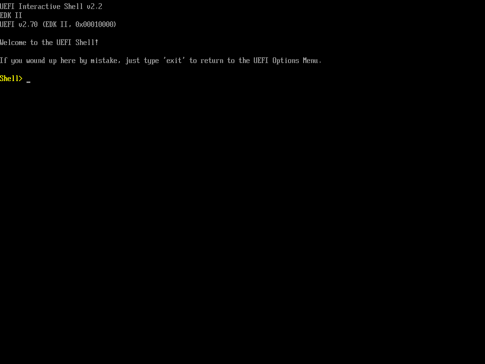

dasharo-coreboot-uefi-vbox
dasharo-coreboot-uefi-vbox · builder dasharo-vbox-boot · provenance built · pass · 5d 19h ago
screenshots: 0 validated, 3 unvalidated, 0 mismatch, 0 OCR error
back to all results
declared dasharo-efi · detected dasharo-efi · verified against the declared lane
dasharo-efi
COM1 coreboot banner: [NOTE ] coreboot-f27600466980 Fri Oct 23 09:27:41 UTC 2026 x86_32 bootblock starting (log level: 7)... [NOTE ] coreboot-f27600466980 Fri Oct 23 09:27:41 UTC 2026 x86_32 romstage starting (log level: 7)... [NOTE ] coreboot-f27600466980 Fri Oct 23 09:27:41 UTC 2026 x86_32 postcar starting (log level: 7)...
exit 0
pass content: UNVALIDATED (no golden) firmware-early

pass content: UNVALIDATED (no golden) firmware-console
pass content: UNVALIDATED (no golden) uefi-shell